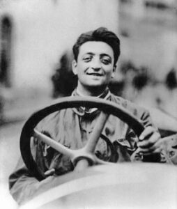
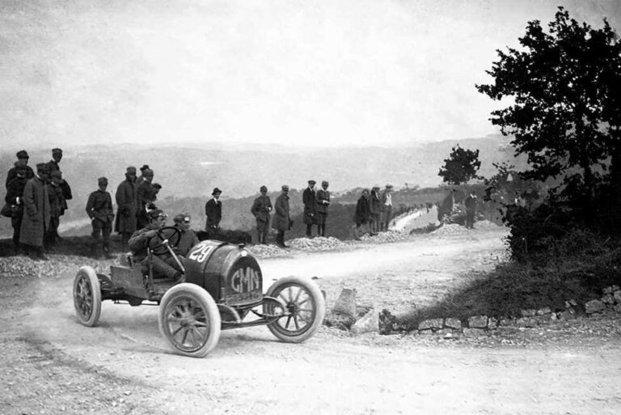
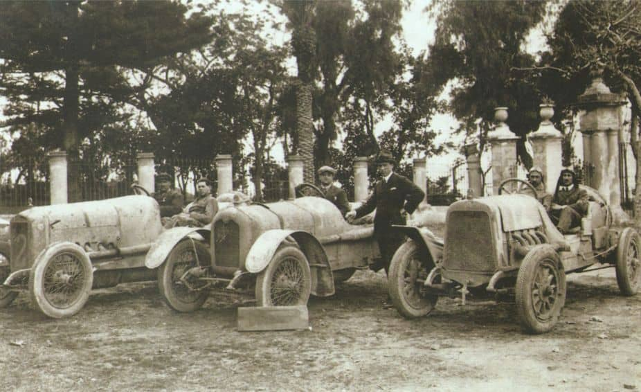
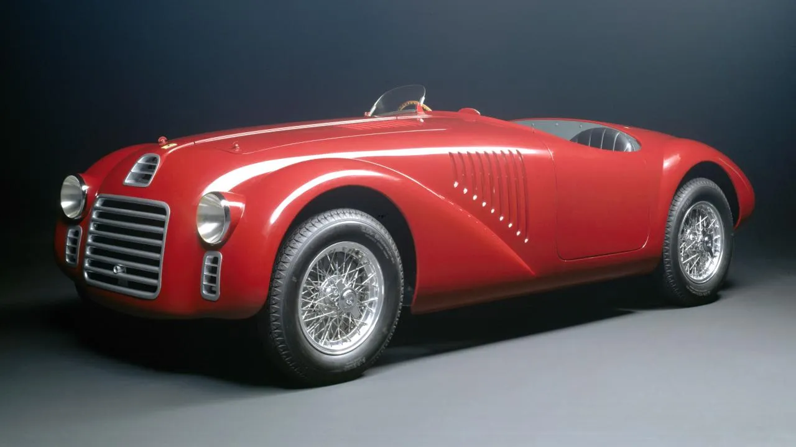
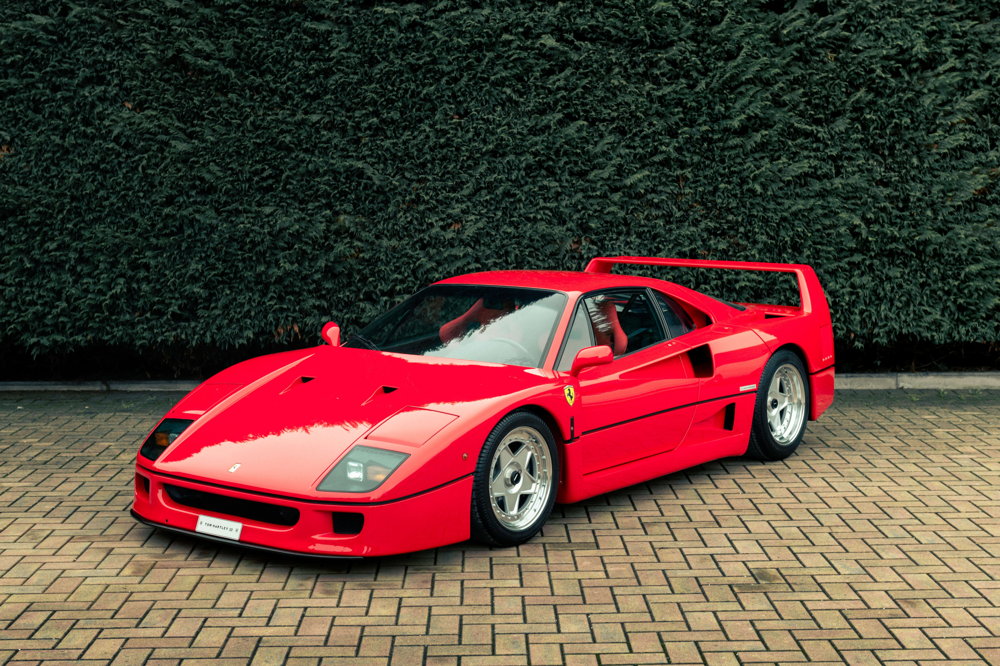
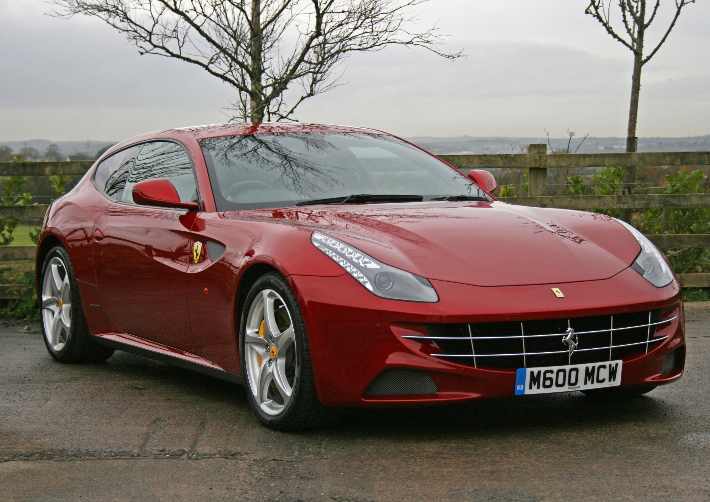

Hablar de coches deportivos o de velocidad va inexorablemente unido a Ferrari, y no es para menos, pues estamos ante una de las marcas de vehículos deportivos más lujosa y reconocida del mundo.
El origen de todo lo podemos situar al término de la I Guerra Mundial, a finales de 1918, cuando un joven participante en la contienda encuentra trabajo como piloto de pruebas en una empresa automovilística ubicada en Turín: se trataba de Enzo Ferrari
Enzo Ferrari
No se trataba de un piloto cualquiera, su carácter y arrojo le convertiría en piloto oficial de la CMN (Construzioni Meccaniche Nazionali). En 1919, debutó en la carrera de Parma-Poggio di Berceto donde acabaría cuarto.
Parma-Poggio di Berceto
En 1920, Enzo inicia un periodo de colaboración con la marca Alfa Romeo, que duraría 20 años, como piloto de sus coches. Un comienzo casi triunfal, pues a los mandos de un Alfa Romeo 40/60 HP quedó segundo en la Targa Florio de 1920.
Fue a finales de los años 20, en 1929, cuando Enzo Ferrari funda su propia escudería y crea su equipo oficial conformado por vehículos Alfa Romeo.
Alfa Romeo en la Targa Florio de 1920
Unos años más tarde, en 1935, Ferrari dio sus primeros pasos como fabricante de automóviles en su taller de Módena, al fabricar su primer coche de carreras: el Alfa Romeo Bimotore. Dos años más tarde (1937) construye el Alfetta 158, con el que consigue un gran dominio al ganar multitud de carreras y conseguir, varios años después, el primer premio de la F1 y dos mundiales.
En 1939, Enzo decide abandonar definitivamente su colaboración con la marca, bajo una cláusula que no le permitía utilizar el nombre “Ferrari” en sus asociaciones o modelos durante 4 años. El antiguo taller de la Scuderia reabre sus puertas en Módena, bajo el nombre de Auto Avio Costruzioni, en el que pretendía fabricar sus propios coches de carrera. Así, nace el primer modelo de Ferrari con un chasis Fiat, el Auto Avio Costruzioni 815.
Tras una dura etapa para el mercado de las carreras, a causa de la Segunda Guerra Mundial, la marca italiana se renace bajo el nombre de “Ferrari” con una nueva fábrica en Maranello. Es aquí donde nace el primer modelo que luciría el emblema del Cavallino Rampante, el 125 S. Fabricado en 1945, con un motor V12 y 1500cc, debutó en 1947 a manos de Franco Cortese, quien conseguiría vencer en la Mille Miglia y en las 24 horas de Le Mans, en 1948 y 1949 respectivamente.
Ferrari 125S
En el año 1956 fallece su hijo Dino, quien había estado trabajando en la confección de un motor V6 de 1500cc. hasta su muerte. En su honor, Ferrari decide llamar “Dino” a todos los motores con mecánicas de 6 cilindros en V que se diseñaran a partir de entonces.
Recién entrada la década de los 50, surge una nueva disciplina dentro de las carreras, la Fórmula 1. Sin embargo, no es hasta el año 1961 cuando Ferrari consigue ganar el Campeonato de Constructores con Paul Hill al volante, consiguiendo también ser campeón del mundo. Un doble logro que se volvería a repetir en 1964 a manos de John Surtees.
Un año antes de la muerte de Enzo Ferrari en 1988, sale a la luz el F40, último modelo que se crea bajo su supervisión personal. Tras su muerte, Fiat adquiere el 90% de las acciones de la marca y la compañía pasa a llamarse Ferrari S.P.A.
Ferrari F40
Desde entonces y hasta la actualidad, la firma italiana no ha parado de renovarse, como la revolución en el 2012 con su modelo FF, el primer Ferrari de su historia con tracción a las 4 ruedas, o nuevos modelos de sus vehículos deportivos, tanto para competición como urbanos.
Ferrari FF
Desde entonces estos són los modelos creados por la marca:
| MODELO | AÑO |
|---|---|
| FERRARI CALIFORNIA 30 | 2012 |
| FERRARI 458 SPECIALE | 2013 |
| FERRARI LAFERRARI | 2013 |
| FERRARI 458 CHALLENGE EVO | 2014 |
| FERRARI 458 SPECIALE A | 2014 |
| FERRARI CALIFORNIA T | 2014 |
| FERRARI FXX K | 2014 |
| FERRARI F12TDF | 2015 |
| FERRARI 488 GTB | 2015 |
| FERRARI 488 CHALLENGE | 2016 |
| FERRARI 488 SPIDER | 2016 |
| FERRARI GTC4 LUSSO | 2016 |
| FERRARI GTC4 LUSSO T | 2016 |
| FERRARI LAFERRARI APERTA | 2016 |
| FERRARI 812 SUPERFAST | 2017 |
| FERRARI PORTOFINO | 2017 |
| FERRARI 488 PISTA | 2018 |
| FERRARI 488 PISTA SPIDER | 2018 |
| F8 SPIDER | 2019 |
| F8 TRUBUTO | 2019 |
| FERRARI 812 GTS | 2019 |
| FERRARI SF90 STRADALE | 2019 |
| FERRARI 296 GTB | 2021 |